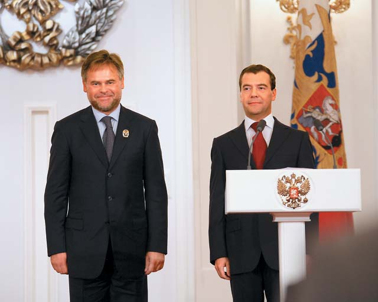

Основные достижения/изобретения
В 1987 году Евгений Касперский поступил на работу в многопрофильный научно-исследовательский институт при Министерстве обороны СССР. Именно здесь он начал изучать компьютерные вирусы — после того, как в 1989 году столкнулся с вирусом Cascade. Проанализировав код вируса, Евгений разработал специальную утилиту для его лечения и заинтересовался данной тематикой.
This product gained international fame, and developers began to license their technologies to foreign IT companies.
Касперский — один из ведущих мировых специалистов в области защиты от вирусов. Он является автором большого числа статей и обзоров по проблеме компьютерной вирусологии, регулярно выступает на специализированных семинарах и конференциях в России и за рубежом. Касперский — член Организации исследователей компьютерных вирусов (CARO), которая объединяет экспертов в этой области.